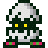

where do you start?
Being just over 25 years old, Digimon is an extremely expansive franchise that branches out into multiple different forms of media. There's the original V-Pets, the anime, movies, TCG, video games, manga, and even more - and lots of these even have totally different or even contradictory rules from eachother! If you, like me, didn't grow up with the franchise and want to learn more about it, it can feel overwhelming trying to figure out the "right" way to learn everything. Of course, there is no real "right" way - all of that will depend on your personal taste. This page hopes to lay out a few places you could start to learn about the Digimon franchise, sorted depending on people's preferences. I'm far from a Digimon expert though, so just follow your heart first!
A brief look at Digimon's history...
Did you know that Digimon originally debuted through it's V-pets in 1997? This may seem like trivial knowledge for someone just learning about it, but knowing the order in which the different aspects of the franchise were released helps to make sense of a lot of the small inconsistencies in some places. Here's the order in which the introductory pieces of Digimon media were released:
- 1997: Digimon makes it's original debut via the V-Pets: a spinoff of Tamagotchi, but "for boys". Starting with only 14 Digimon, updated versions were released over the next few years.
- Summer of 1998: Following the success of the V-Pets, the idea for an original Digimon anime is pitched and begins production. The setting for the show will be borrowed from "Digimon World", which had already started it's production a tad earlier.
- January 1999: "Digimon World" is released for the PS1. Many classic Digimon you'll see found their design roots here!
- March 1999: "Digimon Adventure" the Movie and Anime are both released. From here forward, Digimon will have officially become it's own multi-media franchise.
Because of this back-and-forth between different pieces of media, you may find some consistencies and inconsistencies in the earlier works of Digimon. You can sort of mark when something was released when you consider where it all started... I just always think it's really neat when I notice something like that!
 Setting your expectations...
Setting your expectations...
I feel like I should lay down a few basics as to how Digimon treats each aspect of it's overall library, so that you can get a clear idea as to what you're getting into. If you - again, like me, are more familiar with a franchise like Pokemon and are expecting Digimon to be exactly the same, you'll need to temper your expectations. Here's what I feel like you should know:
- Unlike a series like Pokemon, which is "games first" and "anime second", Digimon is the opposite - anime first, games second. This means that the most popular aspect of the series is the anime, but a lot of the Digimon games are more obscure to most people. If you're looking for games, you'll still have quite a lot of options, but they aren't considered the "mainline" Digimon experience.
- In a lot of cases, the various "rules" for each Digimon series are set differently based on what piece of media you're consuming, so there isn't always a set "standard" for everything in the Digi-world. Though it sounds odd, this actually gives you a lot of freedom to decide what you'd be most interested in! You can decide what path you'd like to follow by reading the next section.
Your own preferences will define your options...
Despite "Where do you start?" being the main question posed here, the actual answer was never really going to be very clear cut. Every person's personal preferences when it comes to media will change what this answer will end up being for them. Because of this, I'd like for you to keep these questions in mind before you start reading through this page:
- Are you more interested in watching the anime and movies, or more miscellaneous parts of Digimon, like the TCG, video games, or the V-Pets?
- Do you prefer stories to have a more light-hearted episodic tone, or a more psychological and "serious" overarching plot?
- How much are you willing to invest into a piece of media before it truly "gets good", and what does that mean to you?
I've decided to come up with 3 "starter pack" paths to recommend here depending on what you prefer. Your answers to these questions will give you the insight towards which paths to follow, so consider your answers carefully. I hope that you can find something here that works for you! If none of these fit you just right, I've tried to describe some basic things about each of these so that you could pick and choose based on what appeals to you most. There's no set way to go about any of this, so feel free to mix and match however you'd like! Click on one of the paths below to get started. Good luck, and have fun!
choose your digivolution!

Path #1
Tried and True
Are you interested in the classic 90's childhood Digimon experience? Do you care more about hijinx and the monster of the week than the broody main character monologues? Are you fine with the journey as long as you had fun on the ride? I think this is the path for you!
This is your path if you aren't interested in serious psychological types of stories or complicated lore, and just want to watch something fun. Slower, less serious plots, saturday morning cartoons.
Path #2
Serious Scholar
Are you someone who loves stories that are mostly character-based, even (or especially) if they're a little dark? Do you like to read up on all of your favorite character's mega complex backstories? Are you super dedicated to the things you like? This is your path!
This is your path if you're someone who likes a more serious story. Contents here range from what I consider the most "serious" anime seasons I've seen to games aimed at adult players.

Path #3
Misc. Master
Are you not much of an anime fan? Do the cards, games, or V-pets stand out to you more than the characters on the TV screen? Would you much rather just learn about the creatures than any of that complicated lore? This is definitely the right path for you!
This is the path for people not interested in the anime, or who just want to learn more about the Digital Monsters. I'm definitely not an expert when it comes to this field, but I'll try to point you in the right direction!